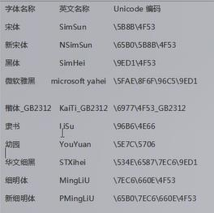

字体相关属性：
font-size 文字大小
font-family 文字字体
font-weight 文字粗细
font-style 文字斜体
line-height 行高
针对文字：
1.font-size大小
2.font-family字体：
中文
英文
Unicode编码

(1)审查元素——console——escape("宋体")——可查得对应Unicode编码
对于浏览器而言，写成unicode编码最好
(2)控制面板——字体库可以看到电脑上的字体
(3)可以设置多个字体，默认用前面的（只要库里有）
3.font-weight字体粗细：
(1)直接设置数字(推荐)
(2)bold 文字加粗（效果和数字700-900差不多)（不推荐）
(3)normal 文字正常显示
(4)h系列标题也可以通过font-weight改粗细
4.font-style字体斜体：
(1)italic斜体
(2)normal正常
5.font属性连写
font: 斜体 粗细 字号/行高 字体
（一旦用font:连写，
必须有 字号和字体，
顺序不能乱
否则无效果
其它可以不写）